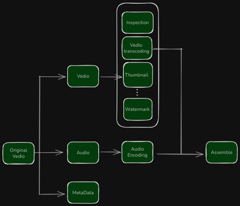
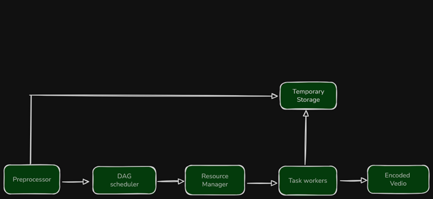
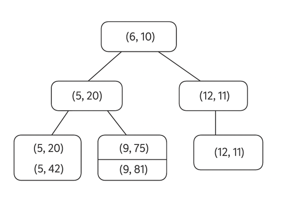

📈 Capacity Estimation
User & Traffic Metrics:
- Monthly Active Users (MAU): 2.7 billion
- Daily Active Users (DAU): 400 million
- Average Videos Watched per User per Day: 5
- Total Daily Video Views: 400 million × 5 = 2 billion
Upload & Storage Estimates:
- View-to-Upload Ratio: 100:1
- Daily Video Uploads: 2.7 billion / 100 = 27 million
- Average Video Size: 100 MB
- Daily Storage Requirement: 27 million × 100 MB = 2.7 PB
CDN Cost Estimation:
- Average Video Size in GB: 0.1 GB
- CDN Cost per GB (e.g., AWS CloudFront): $0.01
- Daily CDN Cost: 2.7 billion × 0.1 GB × $0.01 = $2.7 million
- Monthly CDN Cost: $2.7 million × 30 = $81 million
System Design
Functional Requirements
- Users should be able to upload videos
- Users should be able to view videos
- Users should be able to change video quality
- The system should keep the count of likes, dislikes, comments, and views
Non-Functional Requirements
- Video uploading should be fast and users should have a smooth streaming experience
- The system should be highly available, scalable, and reliable (can compromise on consistency for availability)
- System should offer low latency and high throughput
- System should be cost-efficient
Core Components
- Client Devices: Web browsers, mobile apps, smart TVs
- Web Server: Handles incoming HTTP requests and routes them appropriately
- API Server: Manages business logic, user authentication, and metadata operations
- Transcoding Server: Converts uploaded videos into multiple resolutions and formats
- Video Storage (BLOB): Stores transcoded video files
- Content Delivery Network (CDN): Distributes video content globally for fast access
- Metadata Storage: Holds video metadata like titles, descriptions, and user data
- Metadata Cache: Caches frequently accessed metadata for quick retrieval
- Load Balancer: Distributes incoming traffic across servers to ensure reliability
Video Uploading Process
We use the uploadVideo API for uploading the video content:
string uploadVideo(string apiKey, stream videoData, string videoTitle, string videoDescription, string videoCategory, string videoTags[], string videoLanguage, string videoLocation)
Explanation of parameters:
- apiKey: An identification of the registered account
- videoData: Uploaded video data
- videoTitle: The title of the video
- videoDescription: The description text of the video
- videoCategory: Video category data like sports, education, etc
- videoTags[]: A list of tags for the video
- videoLanguage: The language of the content like English, Hindi, etc
- videoLocation: The location where the video was recorded
The video upload flow is divided into two parallel processes:
- Uploading the video content
- Updating the video metadata
Uploading the Video Content
First, videos are uploaded by the user, and then transcoding servers start encoding. Encoding converts videos into multiple resolutions and formats. This can be parallelized. Popular videos can have an extra compression pass for size efficiency.
Video encoding types:
- Lossless: No data loss from original to new format
- Lossy: Drops some data to reduce size
After encoding:
- Store encoded videos in a transcoded database and CDN
- Update metadata database and cache
Finally, API servers inform the client that the video is ready for streaming.
Transcoding
Transcoding a video is resource-heavy. Different creators may need watermarks, custom thumbnails, or high-definition processing. To support various pipelines and parallelism, a DAG (Directed Acyclic Graph) is used.
- Inspection: Ensure video quality and integrity
- Video Encoding: Support multiple resolutions, codecs, bitrates
- Thumbnail: Either user-uploaded or system-generated
- Watermark: Image overlay for branding or info
Video Transcoding Architecture
Preprocessor Responsibilities
- Video splitting by GOP alignment
- Splitting for compatibility with old devices/browsers
- DAG generation based on config files
- Caching segmented videos and metadata
DAG
The DAG scheduler splits the DAG into task stages and manages task queues:
- Task queue: Pending tasks
- Worker queue: Worker availability info
- Running queue: Info about running tasks
Task Workers
Task workers execute the tasks defined in the DAG.
Temporary Storage
Different storage systems based on data type:
- Metadata in-memory caching
- Video/audio in blob storage
Encoded Video
Final output after encoding pipeline completion.
Video Streaming Process
We use the viewVideo API to stream video content:
stream viewVideo(string apiKey, string videoId, int videoOffset, string codec, string videoResolution)
Explanation:
- apiKey: Registered account identification
- videoId: Video identifier
- videoOffset: Start time offset for resuming videos
- codec: Video codec used
- videoResolution: Client's resolution preference
Streaming is optimized by detecting device specs, bandwidth, and using the closest CDN server.
Popular videos are streamed from CDN, others from video storage.
Standard protocols: MPEG-DASH, HLS, Microsoft Smooth Streaming, Adobe HDS.
Metadata Schema
Use MySQL to store metadata:
users(user_id, name, email, profile_pic, verified)
videos(video_id, user_id, title, description, tags[], resolution[], upload_time, view_count, storage_path)
Indexing: B-Tree index on video_id and user_id
The images describe that user_id 6 has video_id 10, user_id 9 has video_id 75 and 81
Step 2: Metadata Caching
Use Redis for caching:
- Cache video metadata by
video_id - Cache user metadata by
user_id
Set TTL for cache freshness.
Step 3: Metadata Retrieval
Use APIs to retrieve metadata:
- Get video metadata by
video_id - Get user metadata by
user_id